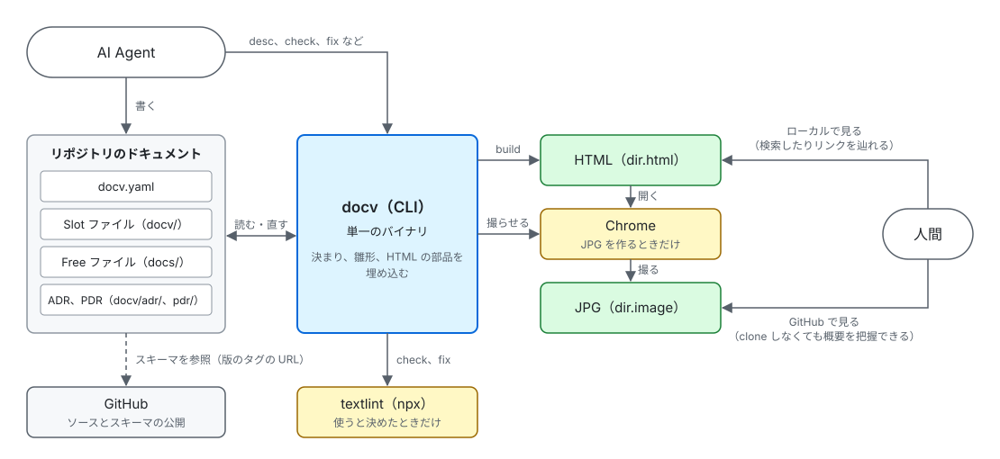

docv/system/system-overview.md
システム概要
docv は、利用者のリポジトリの中で動く単一の CLI で、サーバーを持たない。リポジトリのドキュメントを読み、検査と整形をし、人間が見る HTML を作る。外の道具は、使うと決めたときだけ呼ぶ。

| 部品 | 役割 |
|---|---|
| docv（CLI） | ドキュメントを検査し、整形し、HTML を作る。決まり、雛形、HTML の部品を埋め込み、1 つのバイナリにする |
| リポジトリのドキュメント | docv.yaml、Slot ファイル、Free ファイル、ADR。AI Agent と人間が書き、docv が読む。fix は書き直す |
| textlint | 日本語の文章を検査する。docv.yaml で使うと決めたときだけ、check と fix が npx で呼ぶ |
| Chrome | HTML のページを JPG にする。docv.yaml に dir.image を書いたときだけ、build が動かす |
| HTML、JPG | build の出力。人間が全体像を掴むために見る。HTML はローカルで開き、検索したりリンクを辿れる。JPG は git で管理すれば GitHub で見られ、clone しなくても概要を把握できる。dir.index を書けば、GitHub で Slot ファイルと JPG を辿る入り口のインデックス（docv-index.md）も書く |
| GitHub | ソースを置き、スキーマを版のタグごとに公開する。利用者は、ソースから cargo で docv を入れる。YAML の Slot と docv.yaml の 1 行目が、スキーマを指す |